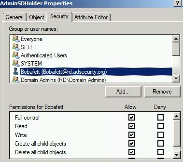

Add the account or group to the AdminSDHolder object permissions granting either Full Control or Modify rights

After running SDProp, Bobafett is automatically added to the Domain Admins group (along with the others listed above). Now this account can modify the Domain Admins group membership.

Note that the user account Bobafett has no group membership.
Despite not being a member of any groups, this account can now modify the group membership of Domain Admins.